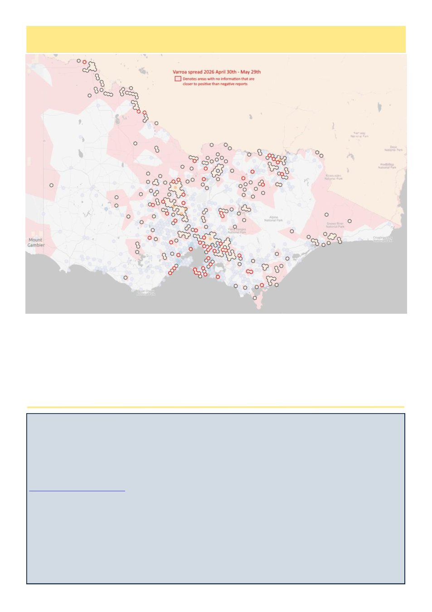

10
Australian Bee Journal
New Book Release
By John Kennedy
A Guide to the Safe Removal of Honey Bee Colonies from Buildings
Beekeepers at all levels frequently receive requests from their local community. Removal of swarms from a front or
back yard are usually common. Even more challenging is to extract a hive from within a wall or building cavity
which is frequently difficult, risky and time consuming. This makes the release of this first edition paperback from
www.northernbeebooks.co.uk very timely. It‘s a 130 page, multiple chapter, paperback written by Clive Stewart
and Stuart Roberts. One of the authors, Mr Stewart, is a founder of UK Bee Removals (UKBR).
It has many case study examples executing such work – and is superbly detailed and richly illustrated.
The book is also richly endorsed by no less than Dr Tom Seeley who notes ―that many removals properly performed
can foster the survival of colonies which have survived without help from us, and show they have the skills needed
to cope with parasites and pathogens. Thus they can help us find our way back to treatment-free beekeeping‖.
Included in the book are warnings about safety which he recommends should be included in any beekeeping course.
A chapter is devoted for beekeepers who may be considering this service as a small business.
Included are issues like insurance or if asbestos is encountered in a building structure and other legal issues.
This book, which is said to protect and preserve the colony itself, is advertised at 19 pounds Sterling and is surely a
good reference for beekeepers and Club or Society libraries.
Varroa Spread Map as at May 29 2026
Every time I post a varroa spead map, a few pessimists start declaring "its pointless because it's everywhere."
Inevitably those people turn out to already have varroa and from their perspective it really is going to be anywhere
they go, but try for a moment to look at things from shoes other than your own. Varroa does not teleport, it only
goes where beekeepers take it, which is not yet everywhere. In my area (Geelong) the hexes match exactly what is
known. If you are in Hamilton and finding no mites in your wash you can breath a sigh of relief that its probably still
far away. Whereas, based on this map, if you're doing a wash in Bendigo and finding nothing, its worth making sure
you're doing the wash right. Yes probably not every positive area is indicated on the map, but every blue hex is a
genuine negative report from the last four months and only when there's nearly none of those will it be reasonable to
say that Varroa is everywhere.
Kris Fricke